You want a toddler room that looks adorable, but you also want it to survive snack crumbs, toy explosions, and the occasional crayon masterpiece on the wall. Fair. Designing for this age feels exciting and a little terrifying at once, cute, practical, able to grow with your kid, and ideally not something you'll be repainting again in six months.
Here's how to land on a room that's genuinely magical, functional, and livable all at once.

How to Combine These Without Creating Chaos
You don't need all twelve ideas crammed into one room. Pick three or four that actually fit your lifestyle, and follow a simple formula: choose one main theme or direction, pick one accent color, add functional storage, include one personalized element, and keep visual clutter to a minimum.
If your toddler craves independence, lean into the Montessori direction. If you want calm, go minimalist. If you want energy, use bold color carefully rather than everywhere at once. Design works best when it actually reflects how your family lives, not just what looks good in a photo.

12 Toddler Room Ideas Worth Trying
1. Personalized Touches That Feel Special
This might be the most meaningful idea on the list. Personalization is what turns a cute, generic room into their room.
A name sign above the bed, framed family photos, handprint art, or a growth chart ruler all create that emotional connection. You don't need to go overboard, one or two meaningful details genuinely create the magic.
A single simple detail, like a wall sign or a cluster of framed favorites, can be the thing your toddler points to proudly every single night.
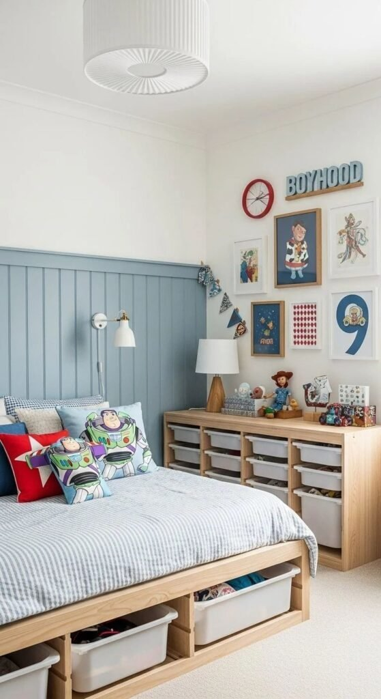
2. Smart Storage That Actually Gets Used
Storage might not sound like the exciting idea on this list, but a messy room stresses everyone out, toddler included.
Open cubbies with labeled bins, under-bed drawers, toy rotation baskets tucked in a closet, and wall hooks at toddler height all keep clutter manageable, and simple enough that your toddler will actually use the system.
Complicated organizers tend to get ignored completely. Kids clean up faster when they know exactly where something goes, with zero extra steps involved.
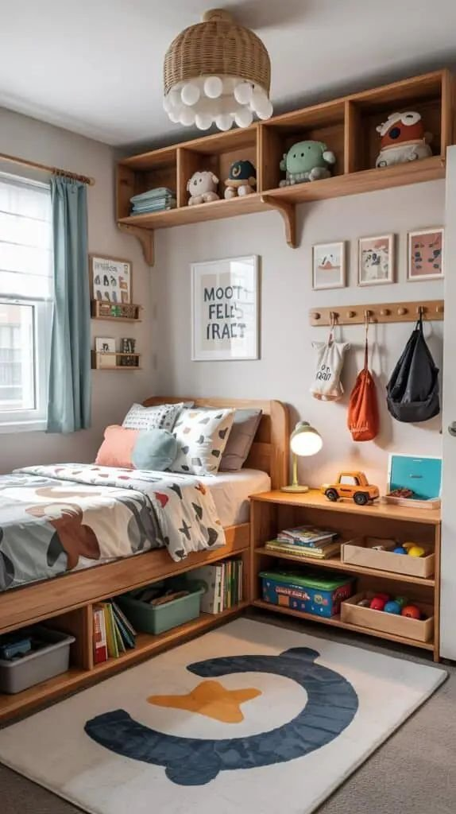
3. Storybook-Inspired
A storybook theme feels magical without going overboard, as long as you pick one direction and build around it subtly, a woodland story with tree decals, a garden corner, or a soft cloud-and-star motif all work.
Keep it curated and let the books themselves become decor. Front-facing bookshelves, a cozy reading chair, soft floor cushions, and warm lamp lighting pull the whole look together.
A reading nook does more than look nice. It quietly builds a habit, one bedtime story at a time.
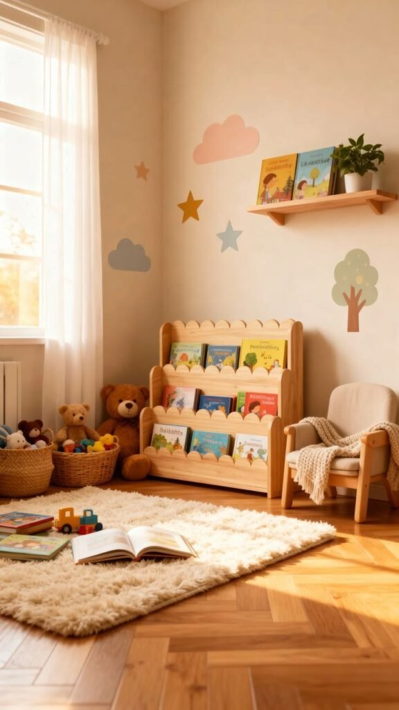
4. Budget-Friendly, Still Looks Expensive
Toddlers grow out of rooms fast, so a designer budget was never really necessary. Smart updates do the heavy lifting instead.
Removable wall decals instead of wallpaper, DIY framed prints, secondhand furniture with a fresh coat of paint, and affordable open shelving all transform a space without a renovation-sized spend.
A simple statement light fixture is one of the highest-impact cheap swaps available. You don't need luxury pricing, you need smart styling choices.
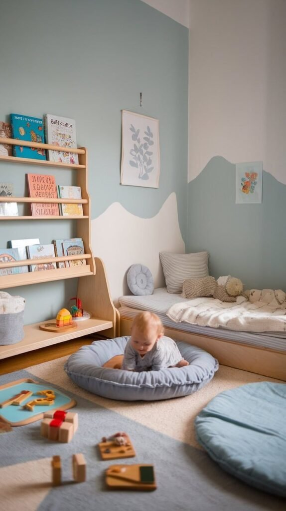
5. Gender Neutral That Grows With Them
Gender-neutral toddler rooms solve a problem most parents only realize later: a heavily themed room ages out fast. Timeless tones like olive green, warm beige, muted mustard, and soft clay sidestep that entirely.
Layer in texture instead of leaning on a "boy" or "girl" theme, woven baskets, wooden toys, linen bedding, and simple art all do real work here.
Neutral doesn't mean boring, it means flexible. Let your toddler's actual personality show up through toys and art instead of permanent, hard-to-undo choices.
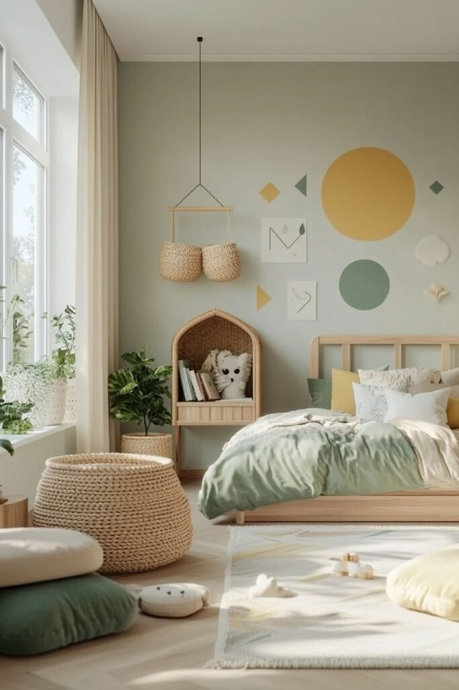
6. Bold, Playful Color
Neutral rooms are lovely, but sometimes you just want straightforward joy. Bold toddler rooms use color on purpose, pick one main hue and support it with softer accents rather than letting every wall compete.
A single statement wall in sage green, dusty blue, or soft coral, paired with white or light wood furniture and coordinated bedding, keeps even a bright room from tipping into visual chaos.
Color works best when it's controlled. Energize the play areas with it, and keep the zone near the bed a little softer to support actual sleep.
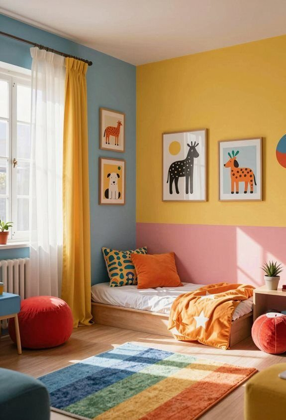
7. Minimalist for Calm
Minimalist toddler rooms sound unrealistic on paper, aren't toddlers supposed to be chaos machines? But limiting visual clutter genuinely creates calm, even in a room that gets used hard.
Keep the walls neutral, stick to fewer and higher-quality toys, hang a few simple framed prints, and choose clean-lined furniture over anything fussy.
Rotating toys every few weeks keeps things feeling fresh without adding more stuff. Your toddler stays interested, and the room stays peaceful. Both matter.
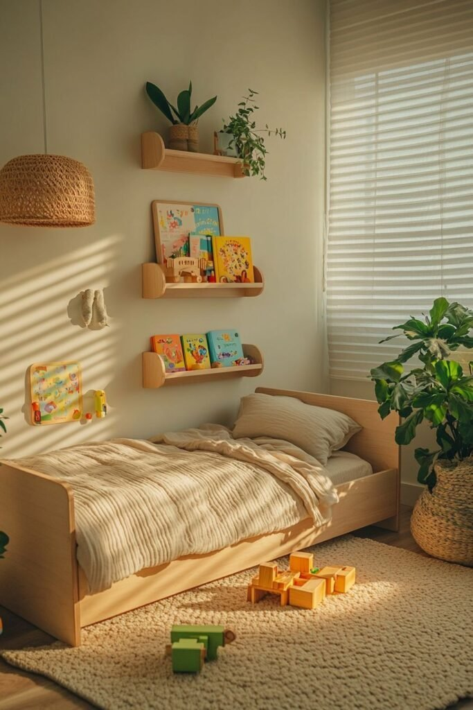
8. A Defined Play Corner
Even in a small room, you can carve out a dedicated play zone. A mini table and chairs, art supplies in bins, an easel or chalkboard wall, and a soft rug underneath turn one corner into its own activity hub.
Defined spaces genuinely help toddlers focus. Kids tend to bounce between toys less when they understand exactly where each kind of play belongs.
Intentional zones do more for actual play than people expect from something this simple.
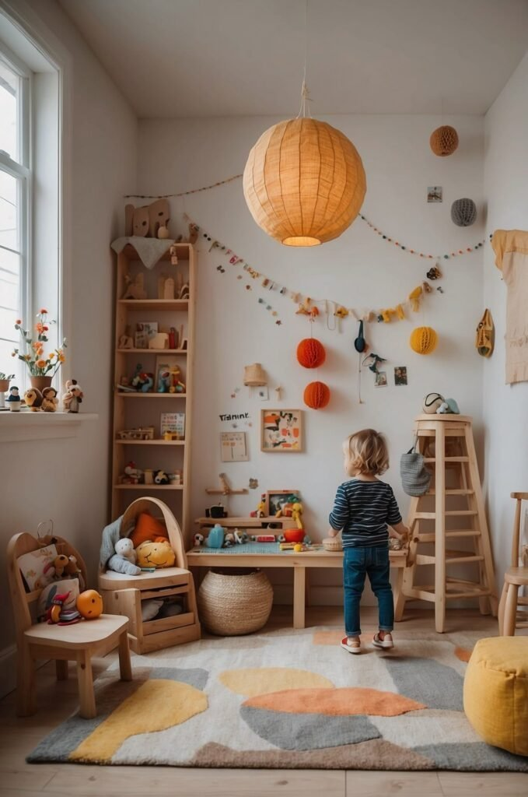
9. Small Space, Maximized
Not everyone has a sprawling nursery to work with. For a compact toddler room, the move is going vertical.
Wall-mounted bookshelves, under-bed storage drawers, hooks instead of bulky coat racks, and a foldable play table all stretch a small footprint further than you'd expect.
The rule that actually matters here: every item should earn its spot. If something's just taking up floor space without adding real value, it probably doesn't belong.
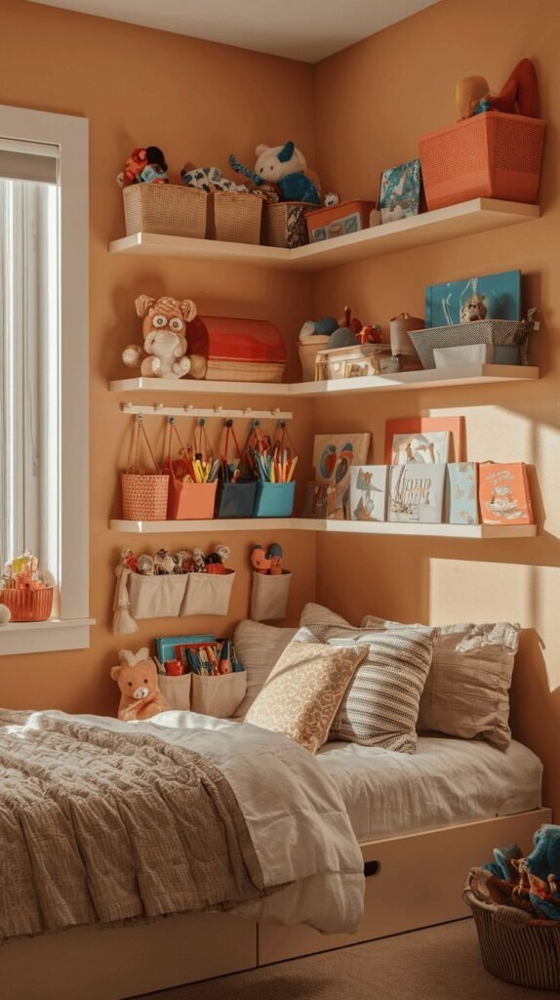
10. Whimsical Animal Themes
Animal themes rarely miss. They read as playful without tipping into overwhelming, especially when you keep the palette soft first and layer the theme on top.
Animal wall decals, safari or woodland bedding, a few plush toys displayed on shelves, and some storybook-style artwork cover the whole look.
The trick is restraint: let one feature wall carry the theme rather than covering every surface. That balance is what keeps it feeling adorable instead of chaotic.
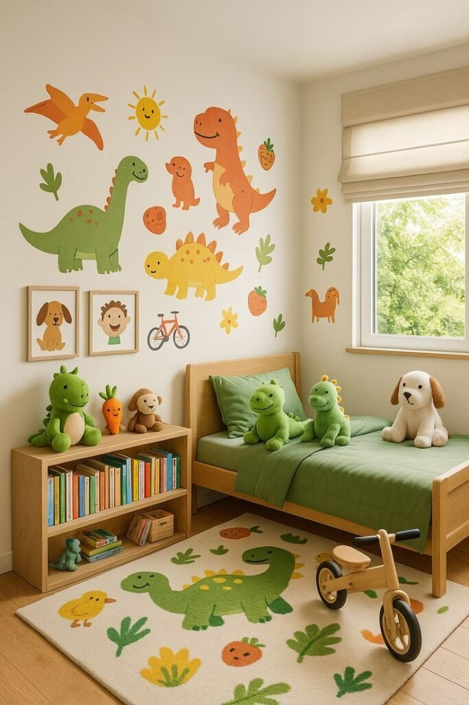
11. Montessori-Inspired for Independence
Montessori-style toddler rooms focus on one thing above all: accessibility. A floor bed, low open shelving, a child-height mirror, and an accessible clothing rack all put choices directly in your toddler's hands.
That access matters more than it sounds like it should. When a toddler can choose their own toys and grab their own clothes, a lot of the daily power struggles just quietly disappear.
Designing at their actual height, rather than yours, is what turns a cute room into one that genuinely builds independence.
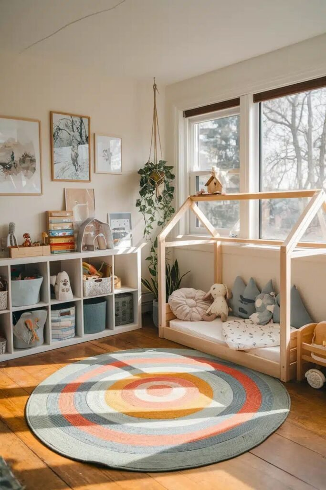
12. Soft Neutral With Cozy Layers
If you want something timeless, this is where to start. Soft beige, warm white, and gentle gray build a calming base, and then texture does the rest of the work.
Layer in a chunky knit blanket, a soft area rug, linen curtains, and a few wood accents. The palette stays flexible enough that you can swap bedding or art anytime without ever touching a paintbrush.
A neutral room also tends to handle bedtime better than a loud one. Calmer colors genuinely seem to take the edge off bedtime battles.
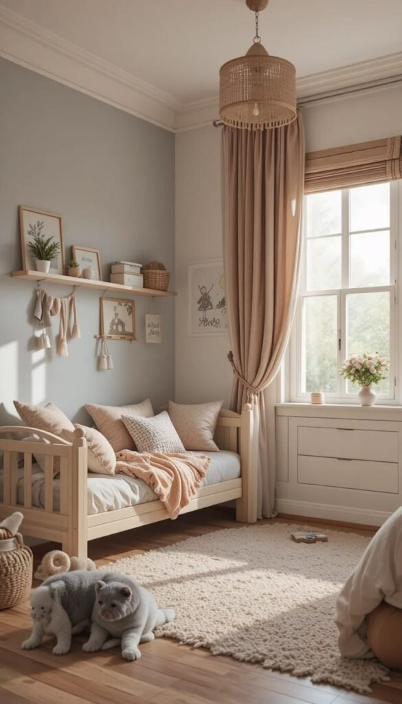
Choosing a Theme Without Overdoing It
Themes are fun right up until they're overwhelming. Start with what your toddler actually loves, animals, cars, rainbows, and build from there without turning the whole room into a theme park.
Keep the foundation simple and add personality through the easy-to-swap stuff: wall art, bedding, throw pillows, toys. You can change any of that in an afternoon. A hand-painted jungle mural, on the other hand, means a full weekend of repainting and a fair amount of regret two years later. Whatever you choose, let the room support actual play, not just how it photographs.
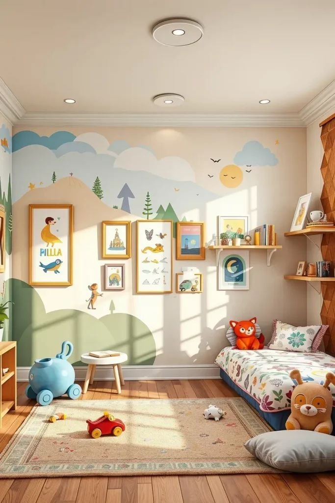
Why Toddler Room Design Actually Matters
A toddler's room does more than look good in photos, it shapes how they play, sleep, and explore every day. Toddlers crave independence: grabbing their own toys, choosing their own pajamas, feeling like the space genuinely belongs to them. Design with that in mind and you build confidence without even trying.
Safety has to come first, always. Anchored furniture, rounded corners, soft rugs for inevitable falls, and non-toxic paint create the freedom for a toddler to actually explore. Storage matters just as much, skip the complicated organizing systems and stick to low cubbies, open baskets, clear bins, and a toy rotation. Kids genuinely play longer and more focused with fewer options in front of them at once.
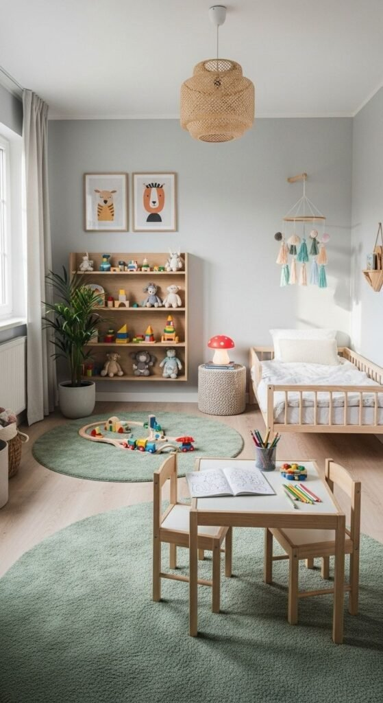
Final Thoughts
Building a great toddler room was never really about chasing trends. It's about creating a space that supports sleep, play, growth, and independence, safety first, accessibility prioritized, design kept flexible, personality added thoughtfully.
Design with intention and you create more than a cute bedroom. You build confidence, encourage independence, and make your own daily life a little easier in the process.
Start with one small change this week. Rearrange a shelf. Rotate the toys. Add a cozy reading nook. The rest can follow at its own pace.